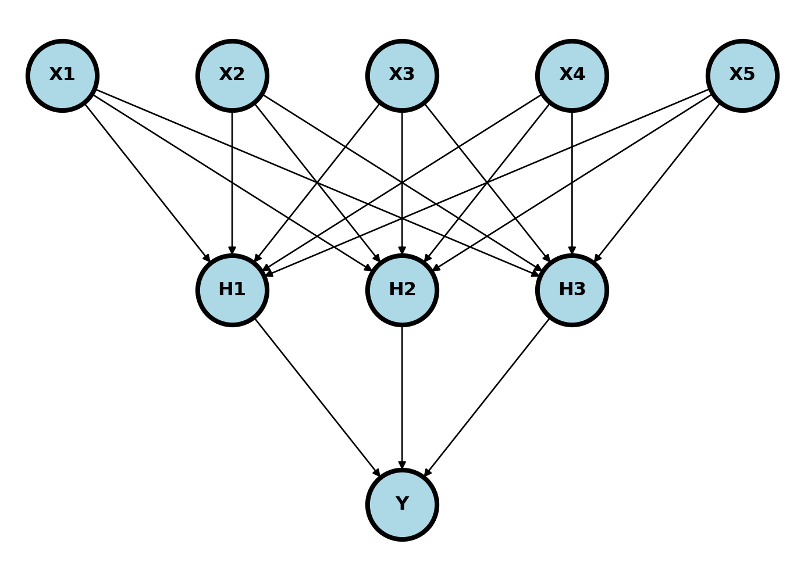
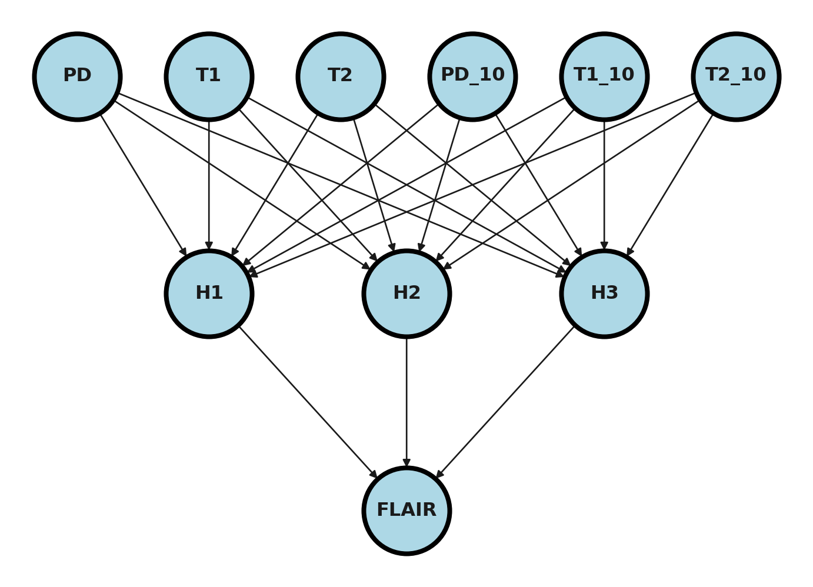
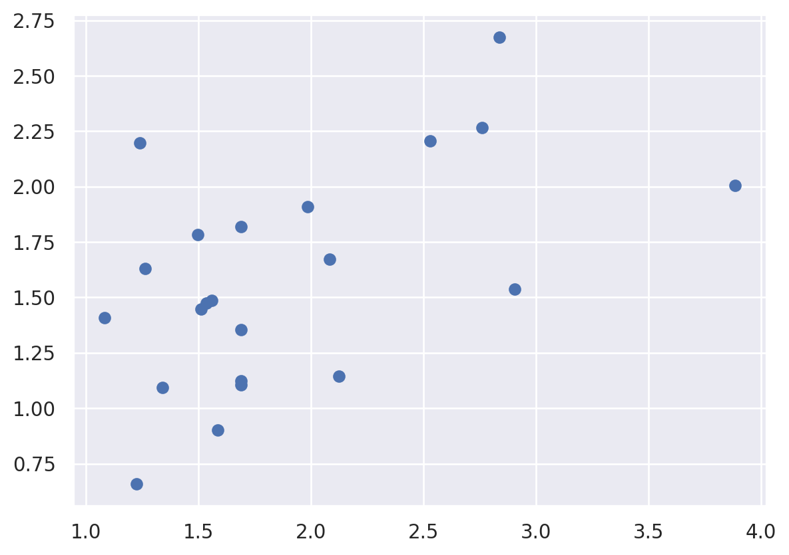

37 Pytorch by example
This example from the pytorch documentation here displays generating random y ad x dat and fitting a multi-layer neural network. We’re going to consider a regression problem, but using a two layer neural network to solve it. Consider something like this. We have 5 inputs; those get passed to 3 hidden nodes, those get RELU’d, which get passed to an output.
Below, we create an example. It isn’t terribly interesting, since the X and the Y aren’t related at all. But, it does show us some useful code.
import torch
import numpy as np
import pandas as pd
import seaborn as sns
import matplotlib.pyplot as plt
import sklearn.linear_model as lm
sns.set()
# N is batch size; D_in is input dimension;
# H is hidden dimension; D_out is output dimension.
N, D_in, H, D_out = 1000, 128, 32, 8
# Create random Tensors to hold inputs and outputs
x = torch.randn(N, D_in)
y = torch.randn(N, D_out)
# Use the nn package to define our model as a sequence of layers. nn.Sequential
# is a Module which contains other Modules, and applies them in sequence to
# produce its output. Each Linear Module computes output from input using a
# linear function, and holds internal Tensors for its weight and bias.
model = torch.nn.Sequential(
torch.nn.Linear(D_in, H),
torch.nn.ReLU(),
torch.nn.Linear(H, D_out),
)
# The nn package also contains definitions of popular loss functions; in this
# case we will use Mean Squared Error (MSE) as our loss function.
loss_fn = torch.nn.MSELoss(reduction='sum')
learning_rate = 1e-4
for t in range(1000):
# Forward pass: compute predicted y by passing x to the model. Module objects
# override the __call__ operator so you can call them like functions. When
# doing so you pass a Tensor of input data to the Module and it produces
# a Tensor of output data.
y_pred = model(x)
# Compute and print loss. We pass Tensors containing the predicted and true
# values of y, and the loss function returns a Tensor containing the
# loss.
loss = loss_fn(y_pred, y)
if t % 100 == 99:
print(t, loss.item())
# Zero the gradients before running the backward pass.
model.zero_grad()
# Backward pass: compute gradient of the loss with respect to all the learnable
# parameters of the model. Internally, the parameters of each Module are stored
# in Tensors with requires_grad=True, so this call will compute gradients for
# all learnable parameters in the model.
loss.backward()
# Update the weights using gradient descent. Each parameter is a Tensor, so
# we can access its gradients like we did before.
with torch.no_grad():
for param in model.parameters():
param -= learning_rate * param.grad99 4589.28369140625
199 3305.961181640625
299 3014.998046875
399 2877.166015625499 2767.670654296875
599 2652.951904296875
699 2566.457275390625
799 2430.92626953125
899 2566.390869140625999 2356.275146484375Let’s update that example for our setting using the voxel level data.
## Read in the data and display a few rows
dat = pd.read_csv("https://raw.githubusercontent.com/bcaffo/ds4bme_intro/master/data/oasis.csv")
Let’s set the training fraction at 75% (and thus the testing fraction at 25%). This gives us relatively little data to fit with. Thus, a relatively simple model makes sense.
trainFraction = .75
sample = np.random.uniform(size = 100) < trainFraction
trainingDat = dat[sample]
testingDat = dat[~sample]Next we need to get the data into a pytorch size and fram
x = torch.from_numpy(dat[['PD','T1', 'T2', 'T1_10', 'T2_10', ]].values)
y = torch.from_numpy(dat[['FLAIR']].values)
##pytorch wants type as float
x = x.float()
y = y.float()
xtraining = x[sample]
xtesting = x[~sample]
ytraining = y[sample]
ytesting = y[~sample]
[
xtraining.size(),
ytraining.size(),
xtesting.size(),
ytesting.size(),
][torch.Size([76, 5]),
torch.Size([76, 1]),
torch.Size([24, 5]),
torch.Size([24, 1])]## Define the model
## Dimension of the hidden layer
H = 3
## Number of predictors
D_in = xtraining.size()[1]
D_out = 1
model = torch.nn.Sequential(
torch.nn.Linear(D_in, H),
torch.nn.ReLU(),
torch.nn.Linear(H, D_out),
)loss_fn = torch.nn.MSELoss(reduction='sum')
learning_rate = 1e-4
for t in range(100000):
y_pred = model(xtraining)
loss = loss_fn(y_pred, ytraining)
if t % 10000 == 0:
print(t, loss.item())
model.zero_grad()
loss.backward()
with torch.no_grad():
for param in model.parameters():
param -= learning_rate * param.grad0 323.53588867187510000 17.55279731750488320000 17.35489463806152330000 17.282836914062540000 17.2363948822021550000 17.20219039916992260000 17.17488288879394570000 16.41392135620117280000 16.2129306793212990000 16.184446334838867## try prediction
ytesting_pred = model(xtesting)
a = ytesting_pred.detach().numpy()
plt.scatter(a[:,0], ytesting[:,0])<matplotlib.collections.PathCollection at 0x7c596adba6b0>